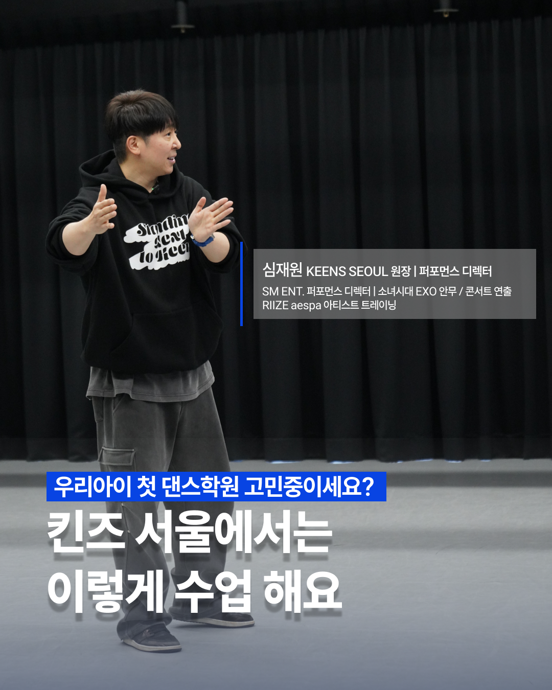

킨즈서울 수업 상담하기
킨즈서울 수업 상담하기매주 수업 영상을 전달해 오늘 무엇을 배웠는지 확인할 수 있습니다.
FIRST DANCE ACADEMY FOR YOUR CHILD
우리 아이 댄스학원,
무엇을 보고 선택해야 할까요?
잘 나온 결과 영상보다 중요한 건 아이를 어떻게 가르치고 살피는지입니다.
킨즈서울은 기본기부터 아이의 작은 변화까지 세심하게 지도합니다.

PARENTS ASK
아이를 보내기 전,
이런 점이 궁금하셨나요?
완성된 안무 영상만으로는 우리 아이가 어떤 방식으로 배우고 성장하는지 알기 어렵습니다.
우리 아이가 수업을 잘 따라갈 수 있을까?
춤을 처음 배우는데 너무 어렵지는 않을까?
학원에서 무엇을 배웠는지 알 수 있을까?
선생님이 아이를 제대로 봐주실까?
수업 후에도 연습이 이어질 수 있을까?
아이에게 맞는 반은 어떻게 찾을까?
HOW WE CARE
아이를 맡긴 뒤에도
성장 과정을 확인할 수 있도록.
킨즈서울은 결과 영상만 보여드리지 않습니다. 아이가 배우고 연습하는 과정을 학부모님과 함께 공유합니다.
잘한 점과 보완할 동작을 구체적으로 짚어 아이에게 필요한 방향을 안내합니다.
선생님이 직접 촬영한 숙제 영상으로 집에서도 기본기 연습을 이어갑니다.
KEENS SEOUL MESSAGE
“수업과 수업 사이에도— 킨즈서울 심재원 원장
아이의 성장은 계속됩니다.”
WHAT REMAINS
아이에게 남는 건
완성된 춤만이 아닙니다.
반복 연습과 구체적인 피드백을 통해 아이는 자신이 무엇을 잘하고, 무엇을 더 연습해야 하는지 알아갑니다.
- 기본기와 리듬감
- 자신 있게 표현하는 힘
- 수업 과정을 확인할 수 있는 영상
- 스스로 연습하는 습관

START WITH A CONVERSATION
우리 아이에게 어떤 수업이 맞을까요?
연령·경험·평소 춤을 추는 모습을 바탕으로
우리 아이에게 맞는 수업을 안내해드립니다.
연령·경험 맞춤 안내기본기·연습 방향 상담가능한 반·시간표 안내
우리 아이 맞는 수업 안내받기 →